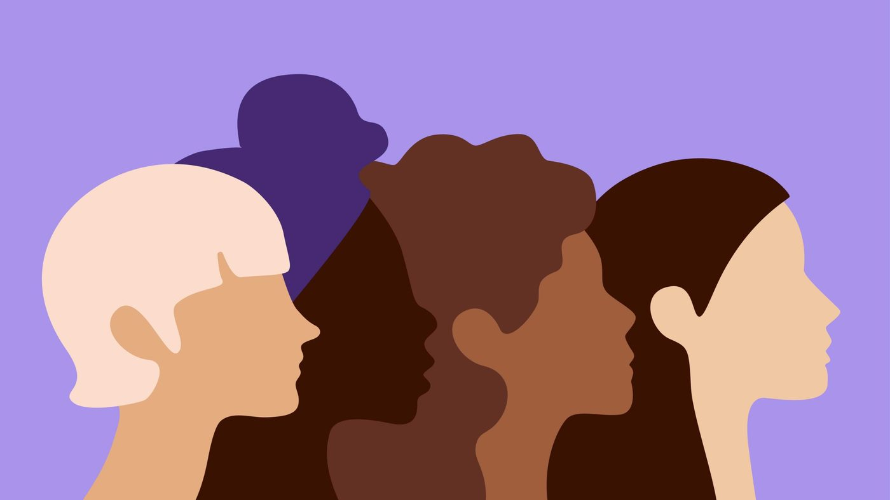
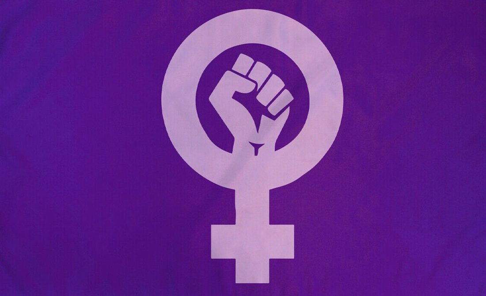

A safe space to be heard.
Anonymous peer support by women, for women. Talk openly, warn each other about unsafe places, and get trusted health and safety information, with no names and no judgement.

How it works
Three simple steps. No email, no phone number and no real name, ever.
Pick an alias
Get a random name and avatar. Nobody will know it’s you.
Join a circle
Find women going through the same things you are, from safety to studies.
Talk and get support
Share, listen, or chat one-on-one with a trained peer listener.
Everything you need, in one safe place
Built with safety first, on every single page.
Anonymous Circles
Group spaces for safety, relationships, motherhood, money, studies and more.
Explore circlesPeer Listeners
One-on-one, private chats with trained women volunteers, whenever you need to talk.
Talk to someoneSafety Alerts
Anonymously report unsafe places and get alerts for the areas you travel through.
See the mapHealth & Body
Clear information on periods, contraception, pregnancy, STIs and screening, plus a private cycle tracker.
Learn moreSafety Toolkit
How to stay safe in South Africa, your legal rights, and a private safety plan.
Open the toolkitWomen in Tech Mentorship
Connect with women already working in tech, and join free workshops.
Find a mentor
Stronger together
MIRA Her exists because too many women in South Africa carry their struggles alone. When women share what they know, warn each other about unsafe places and lift each other up, we all become safer, healthier and more independent.
Safety by design
Every feature was planned around one question: could this put a woman at risk?
Quick Exit
Press Esc or the coral button to leave instantly. You’re logged out and sent to a weather page.
Anonymous by default
We never ask for your name, email, phone number or ID. Just an alias and a password.
Blurred locations
Safety reports are shifted by up to 150 m so nobody can be pinpointed.
Crisis support built in
If a post suggests someone is in danger, they see helplines straight away and moderators are alerted.
Voices from our community
Example stories showing how MIRA Her is meant to help.
“I didn’t have to explain who I was. I could just be honest for the first time in months.”
Sunflower, 24“The Quick Exit button made me feel safe enough to actually use it at home.”
Marula, 31“My mentor helped me prepare for my first tech interview. I got the job.”
Jacaranda, 21You don’t have to carry it alone.
Join in under a minute. No email, no phone number, no judgement.